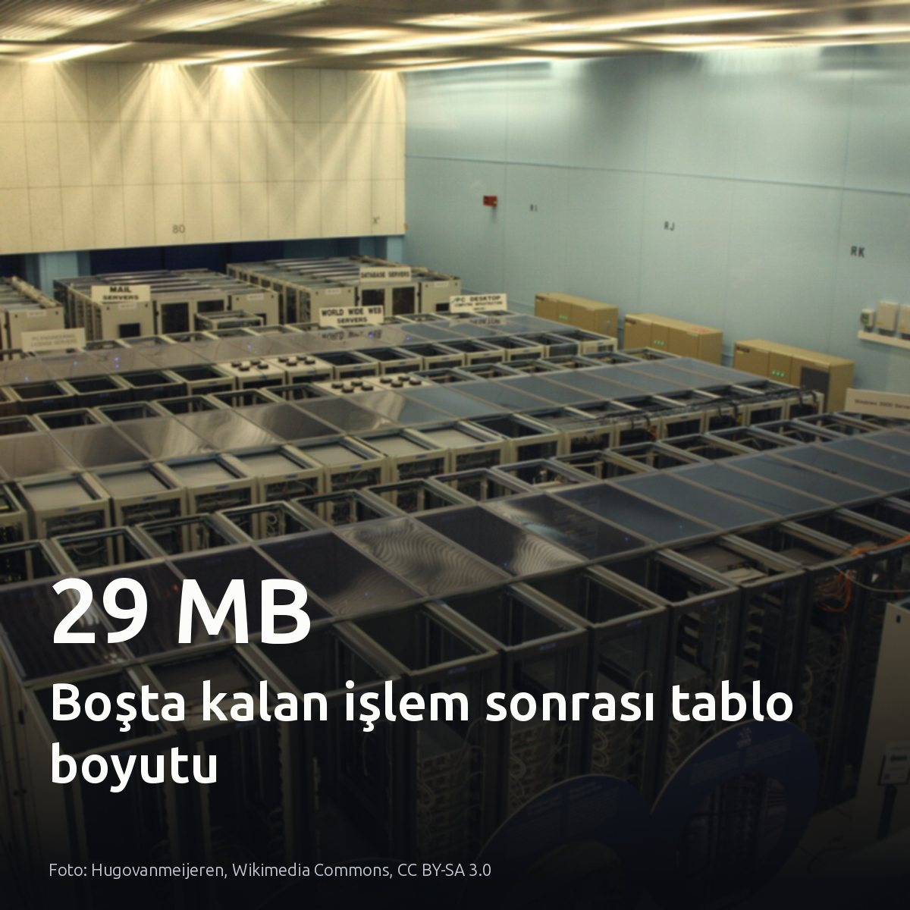
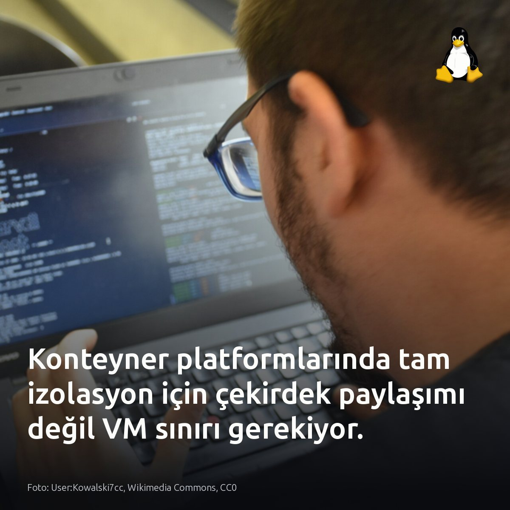
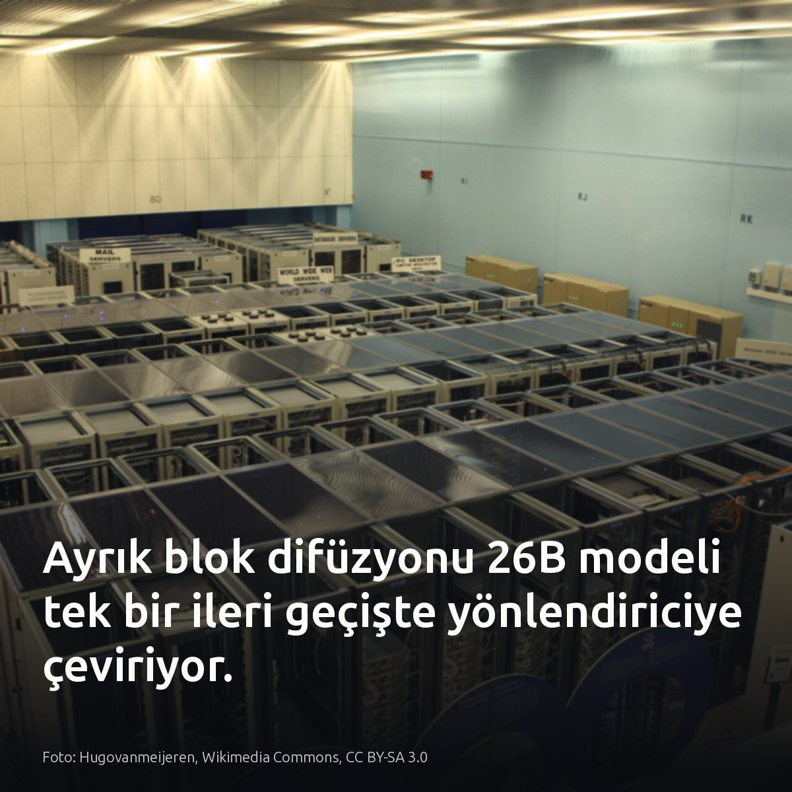
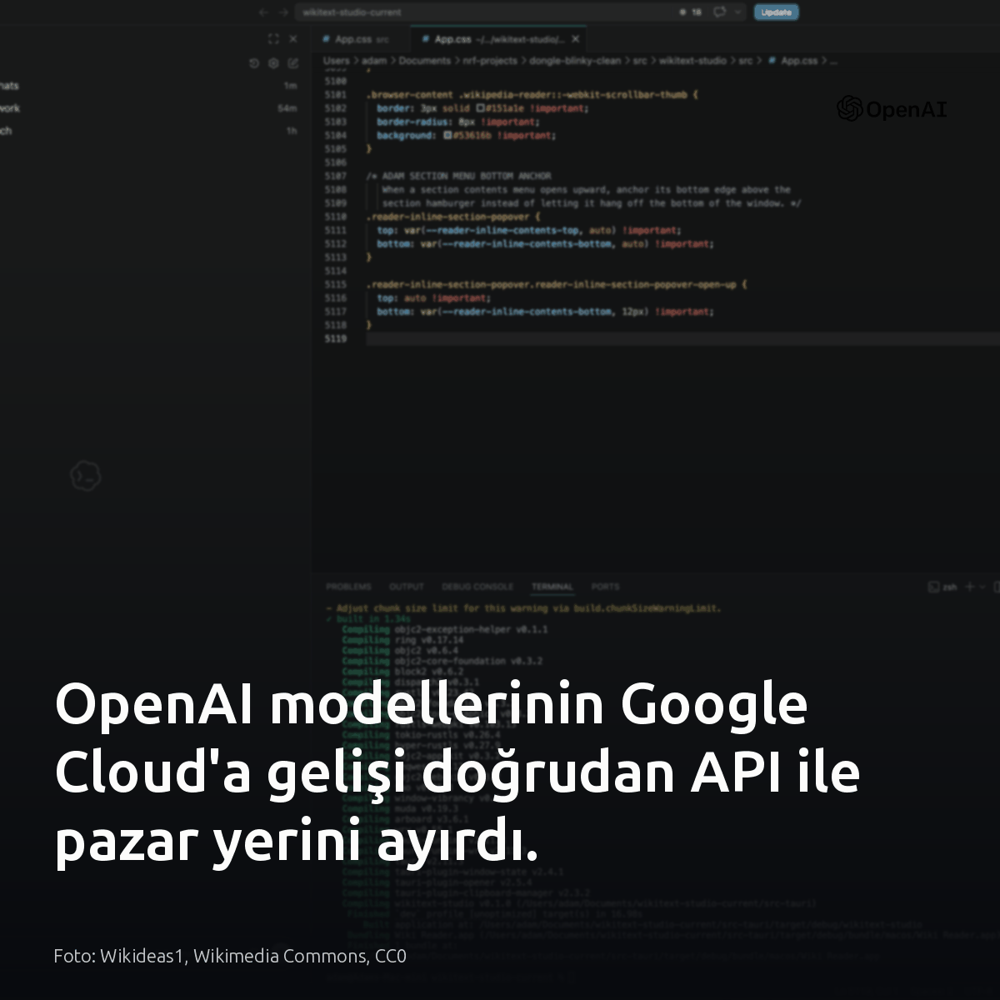
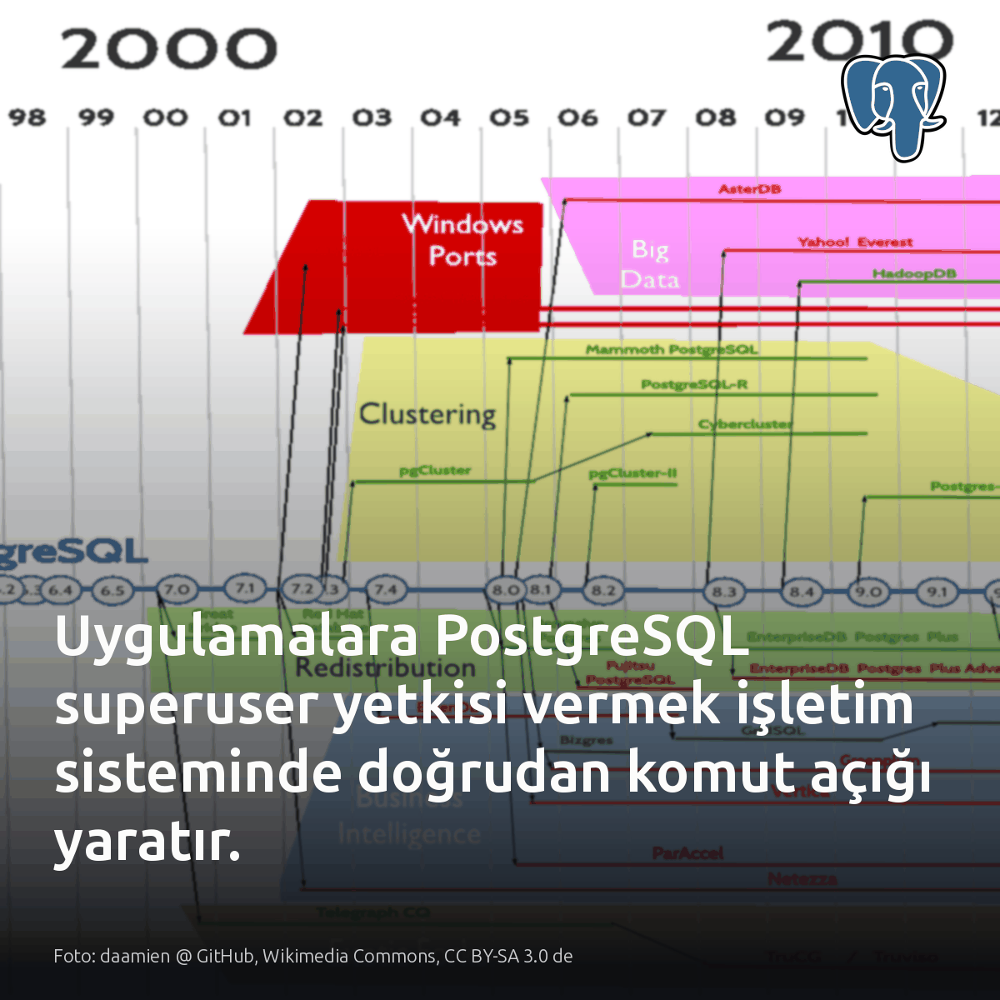

Metni kopyala, kartı indir, LinkedIn'de yapıştır. Bağlantılar gönderiye değil ilk yoruma.

Arkada unutulan tek bir boşta işlem, 152 kB boyutundaki tabloyu 29 MB'a fırlattı. Vakum hiçbir şey silemedi. Açık işlem temizlik ufkunu kilitlediği için 200.000 ölü satır tablodan temizlenemedi. Tek satırlık arama bile 3 yerine 203 tampon okudu. Tablo tam 192 kat şişti. #postgresql #database #dbaKartı indir
Kaynak ve vaka analizi: https://chen0625tung.medium.com/our-152-kb-table-grew-to-29-mb-the-culprit-was-a-session-doing-nothing-c00e62e1a3eb?source=rss------postgresql-5

Konteyner cgroup sınırlarının tam izolasyon sağladığı inancı, haftada 3 milyon konteyner ölçeğinde çöktü. Paylaşımlı çekirdek gürültülü komşuları engelleyemiyor. On binlerce sanal makinede konteyner koşturan Netflix, çok kiracılı Titus platformunda çekirdek paylaşımını terk edip sanal makine düzeyinde izolasyona geçti. Cgroup tekil düğümlerde kaynak kısıtlamak için yeterli; fakat yüksek erişilebilirlik gerektiren kritik veri altyapılarında güvenli çok kiracılık ancak hipervizör sınırıyla mümkün. #linux #containers #devopsKartı indir
Kaynaklar ve görsel referansı: Görsel: User:Kowalski7cc, Wikimedia Commons, CC0 [S1] Single-tenant Titus: https://netflixtechblog.com/single-tenant-titus-vm-level-isolation-on-a-multi-tenant-container-platform-6d8b1909d163?source=rss----2615bd06b42e---4 [S2] & [S3] Titus Architecture & Scale: https://medium.com/netflix-techblog/titus-the-netflix-container-management-platform-is-now-open-source-f868c9fb5436 [S4] & [S5] Titus Production Learnings: https://medium.com/@NetflixTechBlog/titus-the-netflix-container-management-platform-is-now-open-source-f868c9fb5436

DiffusionGemma 26B, yönlendirme kararlarını tek bir ileri geçişte 150 ms gecikmeyle tamamlıyor. Sıralı üretim burada bitiyor. Model, 256 belirteçlik blokları paralel işleyerek otoregresif mimarilerin her adımda KV önbelleği yenileyen sıralı kod çözme darboğazını aşıyor. Çift yönlü öz-dikkat katmanları, tüm maskelenmiş pozisyonların logit değerlerini tek seferde hesaplıyor. Bellekte 26B parametre tutulurken hesaplama anında her belirteç yalnızca 4B parametreden geçiyor. NVFP4 kuantizasyonuyla ağırlıklar 15.7 GiB seviyesine iniyor. Karar gecikmesini belirleyen unsur model boyutu değil, çıkarımın tek geçişte bitmesidir. #diffusionmodels #llmops #localllmKartı indir
İçerikte geçen kaynaklar ve teknik dokümanlar: Görsel kaynağı: Hugovanmeijeren, Wikimedia Commons, CC BY-SA 3.0 [S1] https://medium.com/google-cloud/host-your-own-system-1-decision-model-serving-diffusiongemma-26b-on-the-gemini-enterprise-agent-f8bbdaf9ddf8 [S2] https://medium.com/google-cloud/host-your-own-system-1-decision-model-serving-diffusiongemma-26b-on-the-gemini-enterprise-agent-f8bbdaf9ddf8 [S3] https://medium.com/google-cloud/host-your-own-system-1-decision-model-serving-diffusiongemma-26b-on-the-gemini-enterprise-agent-f8bbdaf9ddf8 [S4] https://medium.com/google-cloud/host-your-own-system-1-decision-model-serving-diffusiongemma-26b-on-the-gemini-enterprise-agent-f8bbdaf9ddf8 [S5] https://medium.com/google-cloud/host-your-own-system-1-decision-model-serving-diffusiongemma-26b-on-the-gemini-enterprise-agent-f8bbdaf9ddf8 [S6] https://arxiv.org/abs/2608.00146

OpenAI modellerinin Google Cloud'a gelişi teknik bir tercihten çok fatura ve yetki ayrımı yarattı. Doğrudan API bağımsız dağıtım hızı ve yeni sürümleri anında kullanma esnekliği sunarken, Google Cloud Marketplace mevcut harcama taahhütlerini doğrudan mahsuplaşma imkânı veriyor. Prototipte doğrudan API yeterli. Merkezi IAM denetimi ve taahhüt eritme kritikse Model Garden üzerinden pazar yeri seçilmeli. Kümelerinizdeki servis hesabı rollerine ve kalan GCP harcama taahhüt bakiyesine bakın. #googlecloud #openai #cloudinfrastructureKartı indir
Kaynaklar: Görsel: Wikideas1, Wikimedia Commons, CC0 Haber ve detaylar: OpenAI, 'OpenAI models are coming to Google Cloud' (2026): https://openai.com/index/openai-models-google-cloud

Uygulama havuzunda superuser kullanmak, basit bir SQL enjeksiyonunu doğrudan sunucu fethine dönüştürüyor. Bu yetki, saldırgana sunucudaki dosyaları okuma, yazma ve işletim sisteminde kabuk komutu çalıştırma imkânı tanır. Hasar veritabanıyla sınırlı kalmaz. Bakılması gereken yer havuzdaki roller; operasyonel işler için PostgreSQL 15 hazır rol sunuyor. RDS ve Cloud SQL gibi yönetilen servislerde bu risk oluşmaz; altyapı gerçek superuser yetkisi vermez. #postgresql #database #infosecKartı indir
Kaynaklar ve detaylı okuma: • Görsel: daamien @ GitHub, Wikimedia Commons (CC BY-SA 3.0 de) • Umair Shahid, Your app does not need PostgreSQL superuser: https://postgr.es/p/9zC • Boring SQL, PostgreSQL Predefined Roles: https://boringsql.com/posts/postgresql-predefined-roles/